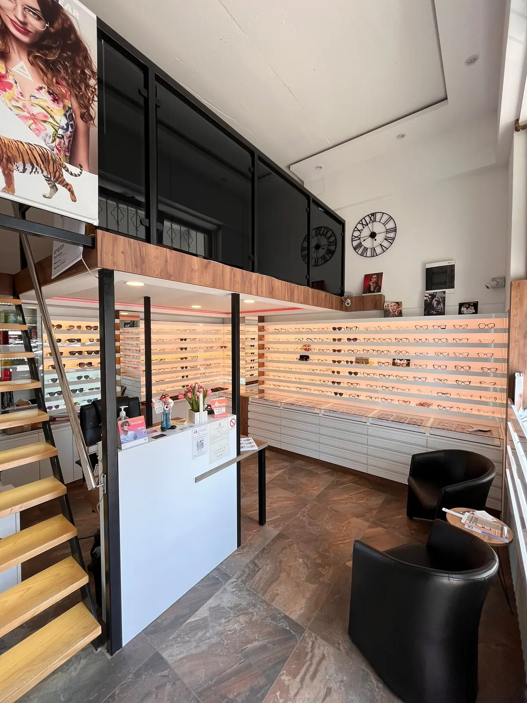
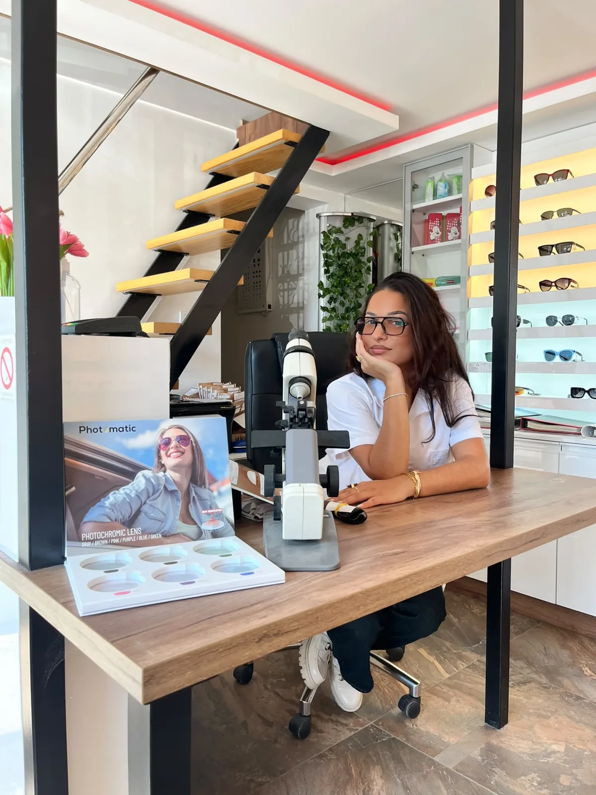

Expertise
Computerised and optometric prescription checks.

Welcome to AS Glasses – where expertise, quality and style meet.
Glasses are more than a vision aid – they are part of your style. We help you find the perfect blend of comfort and design.
Discover a clearer view of the world.

Welcome to AS GlassesA frame that speaks for youClick a picture to enlarge it
Computerised and optometric prescription checks.
Frames from trusted brands, made to last.
A frame that truly suits you.